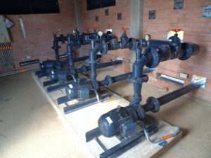
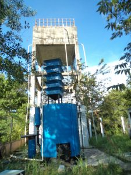
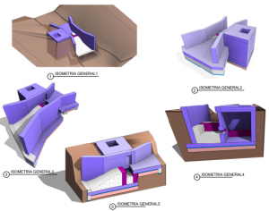

CONSULTORÍA
- Asesoría y acompañamiento a los Entes Territoriales Municipal y departamental
para los municipios
De-certificados.
- Estudios y diseños de acueductos, redes de distribución, estaciones de bombeo,
tanques
de
almacenamiento, plantas de tratamiento de agua potable.
- Estudio, diseño de Redes contra incendios y diseño de redes hidro-sanitarias en
edificaciones.
- Elaboración del Plan de uso eficiente y ahorro de Agua PUEAA.
- Estudio de costos y tarifas para el servicio de acueducto.
- Asesoría en Gestión Empresarial para el manejo eficiente de los servicios de
Acueducto (SUI).
- Asesoría para la Transformación Empresarial y Fortalecimiento Institucional de
los esquemas
prestadores de los servicios públicos de Agua Potable.
CONSTRUCCION
- Construcción de sistemas de tratamiento de agua potable.
- Construcción de redes de aducción, conducción y distribución de acueducto.
- Construcción de estaciones de bombeo.
- Construcción de tanques de almacenamiento.
- Construcción de Redes de contra Incendios.
- Construcción de redes de hidro-sanitarias en edificaciones.

